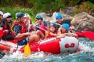
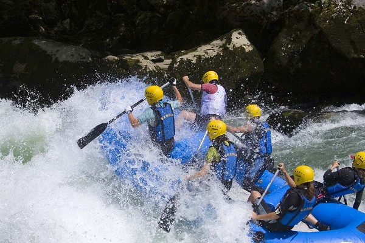

Splash White Water Rafting Site Plan

Purpose: Relaxation, saftey protocols and staff training on rafting skills with first aid and emergerncy.
Mission: Building and strengthening inter-personal relationships.
Vision: Creating a stress free world.
Creed: Rafting is fulfilling purpose with focus.
History
Splash White Water Rafting is a well-respected and established outdoor activity provider based in Nigeria. 17 years of industry experience ensures a great experience for adventure-seekers on our daily activity trips. Our adventure experiences include white water rafting, river bugging and river duckies. With the latest safety equipment and safety precautions included as standard. Splash white water rafting provides the experience of a lifetime in as safe an environment as possible. Our trained and experienced raft guides who are trained according to International Rafting Federation guidelines will maintain a high level of safety. Splash are fully licensed through the Health and Safety Executive’s Adventure Activities Licensing Authority (AALA)......
Adventure Awaits You!
Hallow River

Allen River

Mote River
Pearl River